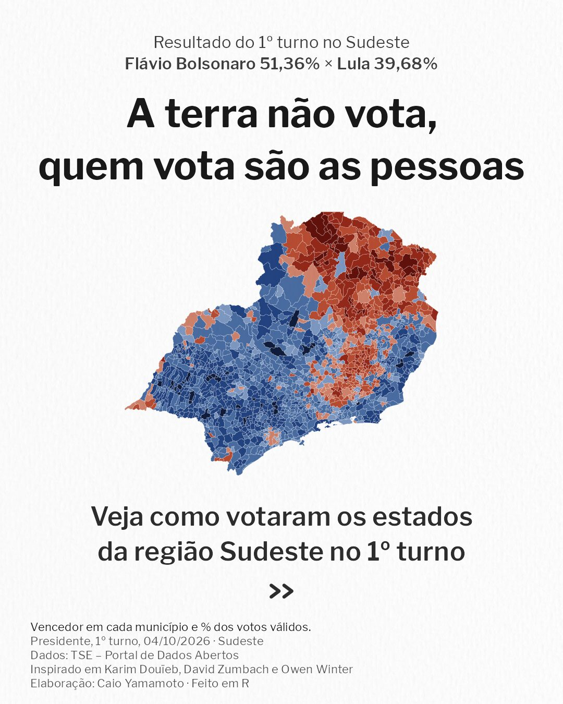
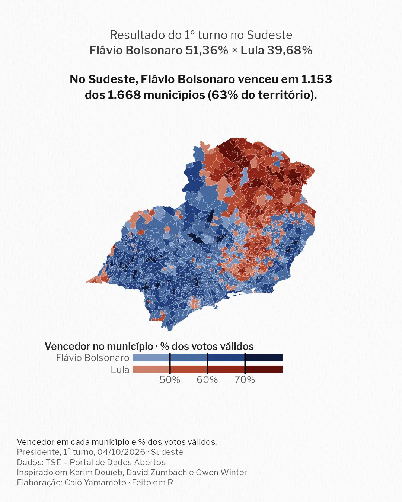
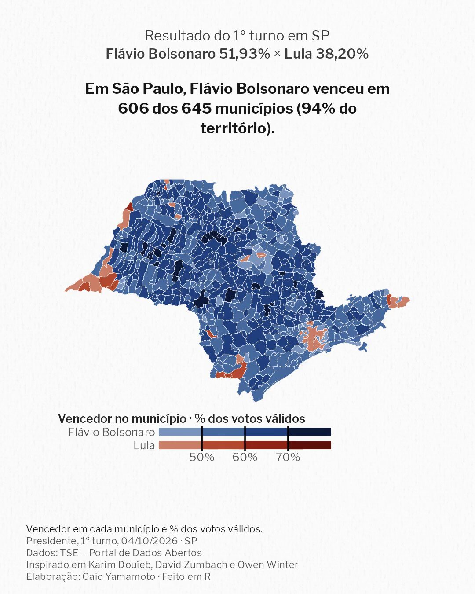
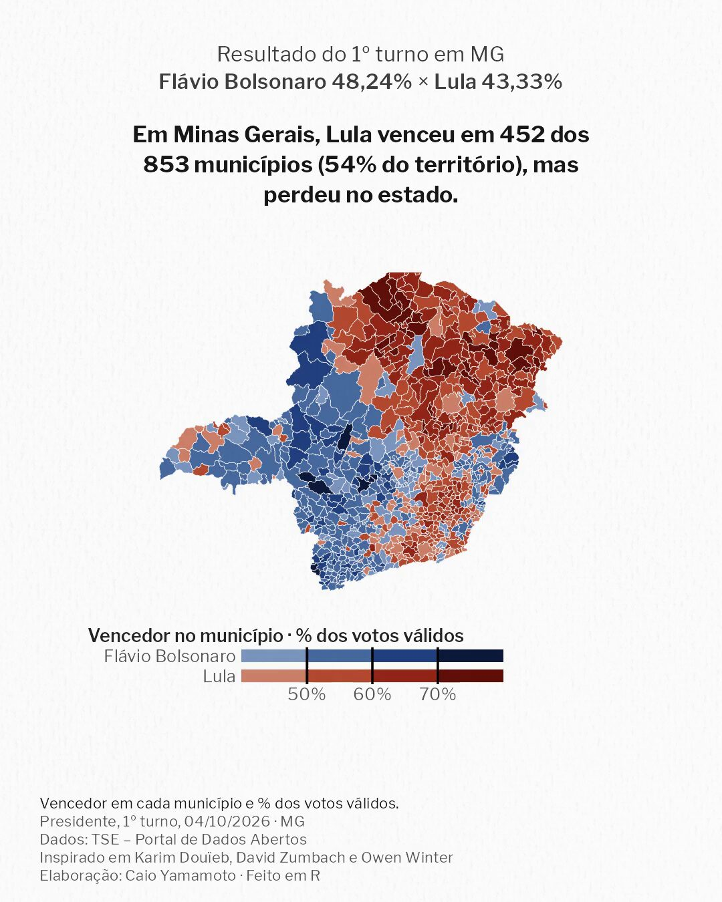
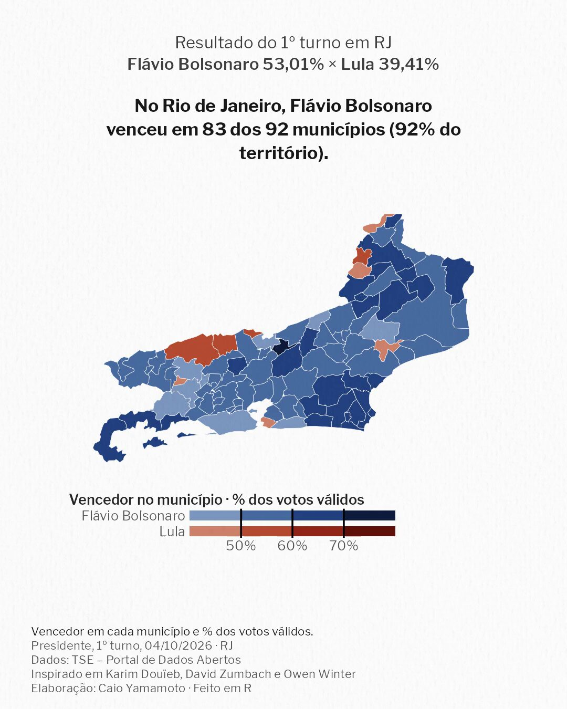
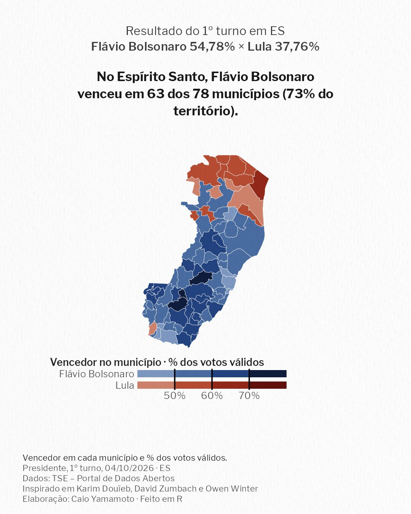
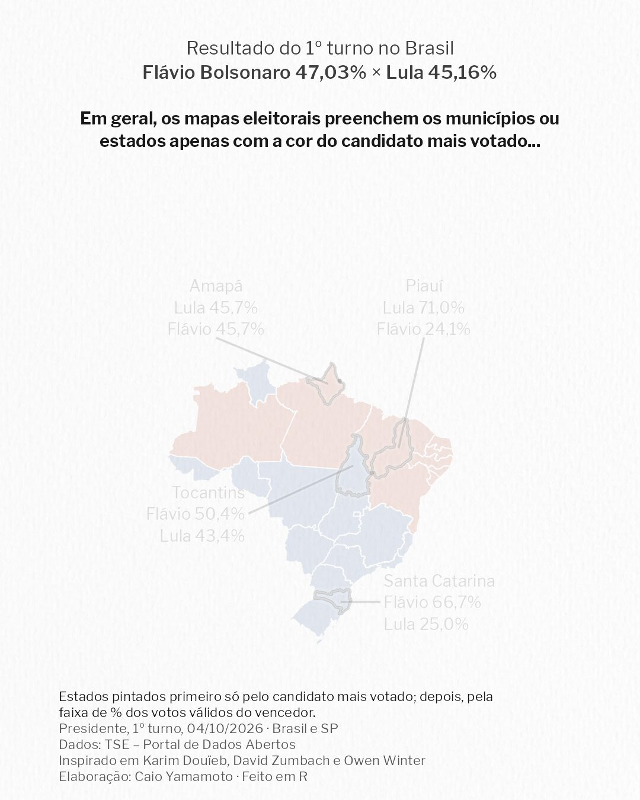

A terra não vota, mas as pessoas, sim. (tradução livre, e meio anglicista, de "Land doesn't vote, people do").
Fiz uma série de mapas animados com os dados do 1º turno de 2026 para mostrar como o mapa típico de "Candidato mais votado por município/estado" exagera o peso de áreas extensas e pouco povoadas nos resultados eleitorais. Publicada no Instagram, a série foi vista mais de 300 mil vezes.

Capa
Região
São Paulo
Minas Gerais
Rio de Janeiro
Espírito Santo
ReflexãoDados: TSE – Portal de Dados Abertos (Presidente, 1º turno, 04/10/2026). Geometria: IBGE via {geobr}. Ferramentas: R (sf, ggplot2, tweenr, magick, av). Elaboração: Caio Yamamoto. Ver no Instagram.
Inspiração: Karim Douïeb ("Land doesn't vote, people do"), David Zumbach (votemapswitzerland) e Owen Winter. Referências: Harley (1989), Monmonier (1991), Wood (1992).